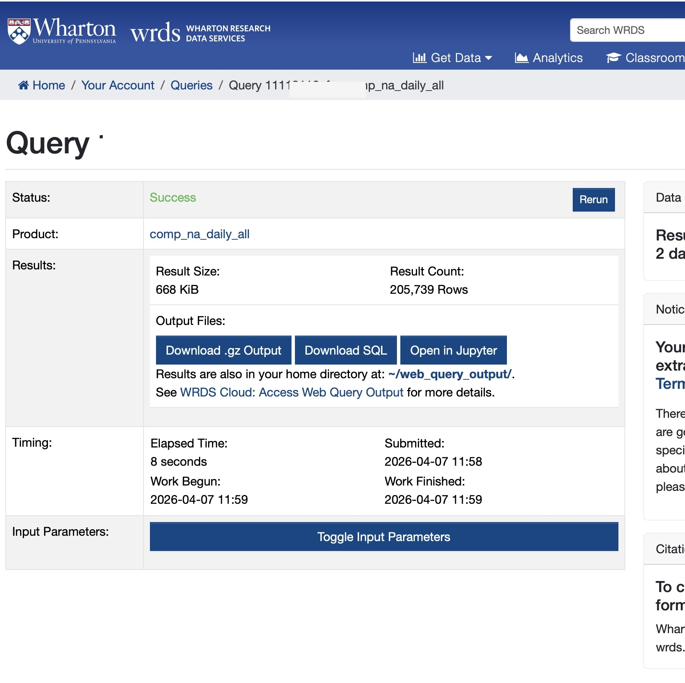

One way to get data from WRDS is the web query interface. While the WRDS documentation for this feature is characteristically poor, one video on the site demonstrates the process for getting data from Compustat, a leading database of financial statement information.
The video starts with the landing page for WRDS, then the host selects “Compustat - Capital IQ”, then “North America” under “Compustat”, then “Fundamentals Annual”. This then lands the user on the web query page for that data set.
According to the video, there are always four steps with the web query:
Choose your date range. I will follow the video and leave this at the default setting of 15 years of data.
Apply your company codes. Here the video enters a handful of tickers. I am going to instead select “Search the entire database”.
Choose variables. Here I will just keep the default option.
Select your query output. Here the video presenter chooses Excel. No-one should ever use Excel in serious research (see here). I will choose “comma-delimited text” for output format, “gzip” for compression type, and YYYY-MM-DD. for date format (this is really the only acceptable option for research purposes). Note that this last step does not much matter, though I think we may want to keep the size of the input to a minimum.
I then enter my email address and then check the box to save the query (I select the name web_query). I then click “Submit Form”.
I then have to wait for the query to run, after which I can go to a page like the one shown in Figure 1.

Figure 1: WRDS web query results page after submitting a query
The next step is to download the SQL rather than the .gz output. In this case the downloaded SQL looks like
We can easily clean this up to remove unnecessary elements (e.g., the LEFT JOIN and the comp_na_daily_all. prefixes) and add a few columns of interest (obtained from here), resulting in the following:
SELECT gvkey, datadate, indfmt, consol, tic, curcd, costat, act, ap, at, ceq, che, cogs, csho, dlc, dltis, dltt, dp, ib, invt, ivao, ivst, lct, lt, ni, ppegt, pstk, re, rect, sale, sstk, txp, txt, xint, prcc_fFROM comp_na_daily_all.fundaWHERE datadate BETWEENDATE'2010-01-01'ANDDATE'2026-04-30'AND consol ='C'AND indfmt IN ('INDL', 'FS')AND datafmt ='STD'AND curcd IN ('USD', 'CAD')AND costat IN ('A', 'I');
Now, I can run the following Python code (query is just copy-pasted from above):
%%timefrom db2pq import wrds_sql_to_pqquery ="""SELECT gvkey, datadate, indfmt, consol, tic, curcd, costat, act, ap, at, ceq, che, cogs, csho, dlc, dltis, dltt, dp, ib, invt, ivao, ivst, lct, lt, ni, ppegt, pstk, re, rect, sale, sstk, txp, txt, xint, prcc_fFROM comp_na_daily_all.fundaWHERE datadate BETWEEN DATE '2010-01-01' AND DATE '2026-04-30' AND consol = 'C' AND indfmt IN ('INDL', 'FS') AND datafmt = 'STD' AND curcd IN ('USD', 'CAD') AND costat IN ('A', 'I');"""wrds_sql_to_pq(query, "features", "my_project")
CPU times: user 1.11 s, sys: 284 ms, total: 1.39 s
Wall time: 3.36 s
Now I have a file that I can load into Python or R or whatever modern data analysis package I might be using.
Note that as an alternative to using wrds_sql_to_pq, I could just choose to get the entire table. In this case, it might be simpler to refer to comp_na_daily_all.funda using its alias comp.funda (this facilitates reproducibility for some WRDS tables). Because I am getting more data, this will take longer. In this second case, I will have used the web query simply to identify the table I want to download.
from db2pq import wrds_update_pqwrds_update_pq("funda", "comp")